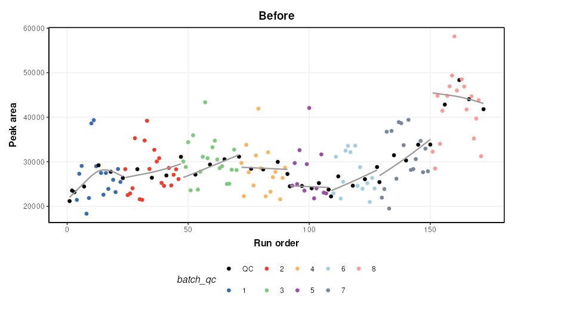
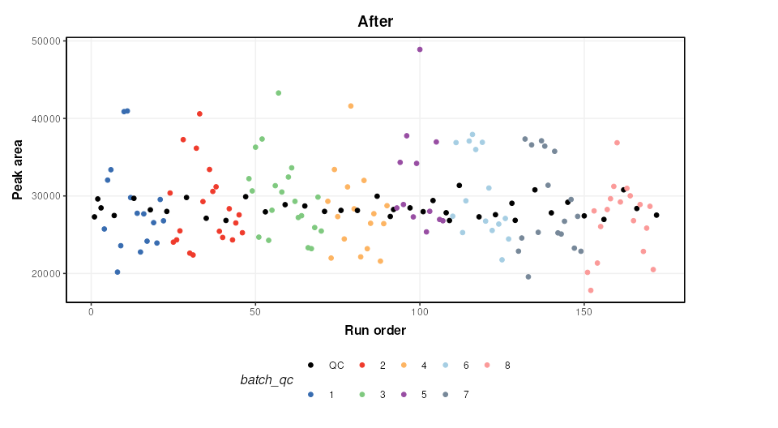
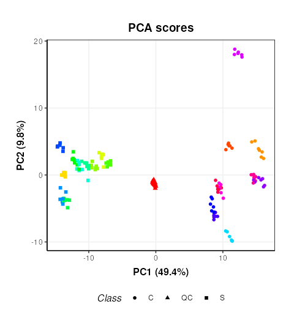
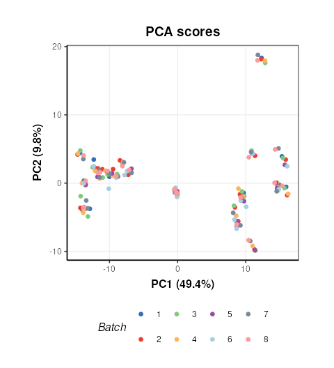

A typical workflow for processing and analysing mass spectrometry-based metabolomics data
Gavin R Lloyd
Phenome Centre Birmingham, University of Birmingham, UKg.r.lloyd@bham.ac.uk
Andris Jankevics
Phenome Centre Birmingham, University of Birmingham, UKa.jankevics@bham.ac.uk
Ralf J Weber
Phenome Centre Birmingham, University of Birmingham, UKr.j.weber@bham.ac.uk
2026-04-16
Source:vignettes/articles/typical_MS_workflow.Rmd
typical_MS_workflow.RmdIntroduction
This vignette provides an overview of a structToolbox
workflow implemented to process (e.g. filter features, signal drift and
batch correction, normalise and missing value imputation) mass
spectrometry data. The workflow exists of methods that are part of the
Peak Matrix Processing (pmp) package,
including a range of additional filters that are described in Kirwan et
al., 2013,
2014.
Some packages are required for this vignette in addition
structToolbox:
Dataset
For demonstration purposes we will process and analyse the MTBLS79 dataset (‘Dataset 7:SFPM’ Kirwan et al., 2014. This dataset represents a systematic evaluation of the reproducibility of a multi-batch direct-infusion mass spectrometry (DIMS)-based metabolomics study of cardiac tissue extracts. It comprises twenty biological samples (cow vs. sheep) that were analysed repeatedly, in 8 batches across 7 days, together with a concurrent set of quality control (QC) samples. Data are presented from each step of the data processing workflow and are available through MetaboLights (https://www.ebi.ac.uk/metabolights/MTBLS79).
The MTBLS79_DatasetExperiment object included in the
structToolbox package is a processed version of the MTBLS79
dataset available in peak matrix processing (pmp) package.
This vignette describes step by step how the structToolbox
version was created from the pmp version (i.e. ‘Dataset
7:SFPM’ from the Scientific Data publication - https://doi.org/10.1038/sdata.2014.12).
The SummarizedExperiment object from the
pmp package needs to be converted to a
DatasetExperiment object for use with
structToolbox.
# the pmp SE object
SE = MTBLS79
# convert to DE
DE = as.DatasetExperiment(SE)
DE$name = 'MTBLS79'
DE$description = 'Converted from SE provided by the pmp package'
# add a column indicating the order the samples were measured in
DE$sample_meta$run_order = 1:nrow(DE)
# add a column indicating if the sample is biological or a QC
Type=as.character(DE$sample_meta$Class)
Type[Type != 'QC'] = 'Sample'
DE$sample_meta$Type = factor(Type)
# add a column for plotting batches
DE$sample_meta$batch_qc = DE$sample_meta$Batch
DE$sample_meta$batch_qc[DE$sample_meta$Type=='QC']='QC'
# convert to factors
DE$sample_meta$Batch = factor(DE$sample_meta$Batch)
DE$sample_meta$Type = factor(DE$sample_meta$Type)
DE$sample_meta$Class = factor(DE$sample_meta$Class)
DE$sample_meta$batch_qc = factor(DE$sample_meta$batch_qc)
# print summary
DE## A "DatasetExperiment" object
## ----------------------------
## name: MTBLS79
## description: Converted from SE provided by the pmp package
## data: 172 rows x 2488 columns
## sample_meta: 172 rows x 7 columns
## variable_meta: 2488 rows x 0 columnsFull processing of the data set requires a number of steps. These
will be applied using a single struct model sequence
(model_seq).
Signal drift and batch correction
A batch correction algorithm is applied to reduce intra- and inter-
batch variations in the dataset. Quality Control-Robust Spline
Correction (QC-RSC) is provided in the pmp package, and it
has been wrapped into a structToolbox object called
sb_corr.
M = # batch correction
sb_corr(
order_col='run_order',
batch_col='Batch',
qc_col='Type',
qc_label='QC',
spar_lim = c(0.6,0.8)
)
M = model_apply(M,DE)The figure below shows a plot of a feature vs run order, before and after the correction. The fitted spline for each batch is shown in grey. It can be seen that the correction has removed instrument drift within and between batches.
C = feature_profile(
run_order='run_order',
qc_label='QC',
qc_column='Type',
colour_by='batch_qc',
feature_to_plot='200.03196',
plot_sd=FALSE
)
# plot and modify using ggplot2
chart_plot(C,M,DE)+ylab('Peak area')+ggtitle('Before')
chart_plot(C,predicted(M))+ylab('Peak area')+ggtitle('After')
An additional step is added to the published workflow to remove any
feature not corrected by QCRCMS. This can occur if there are not enough
measured QC values within a batch. QCRMS in the
pmp package currently returns NA for all samples in the
feature where this occurs. Features where this occurs will be
excluded.
M2 = filter_na_count(
threshold=3,
factor_name='Batch'
)
M2 = model_apply(M2,predicted(M))
# calculate number of features removed
nc = ncol(DE) - ncol(predicted(M2))
cat(paste0('Number of features removed: ', nc))## Number of features removed: 425The output of this step is the output of
MTBLS79_DatasetExperiment(filtered=FALSE).
Feature filtering
In the journal article three spectral cleaning steps are applied. In
the first filter a Kruskal-Wallis test is used to identify features not
reliably detected in the QC samples (p < 0.0001) of all batches. We
follow the same parameters as the original article and do not use
multiple test correction (mtc = 'none').
M3 = kw_rank_sum(
alpha=0.0001,
mtc='none',
factor_names='Batch',
predicted='significant'
) +
filter_by_name(
mode='exclude',
dimension = 'variable',
seq_in = 'names',
names='seq_fcn', # this is a placeholder and will be replaced by seq_fcn
seq_fcn=function(x){return(x[,1])}
)
M3 = model_apply(M3, predicted(M2))
nc = ncol(predicted(M2)) - ncol(predicted(M3))
cat(paste0('Number of features removed: ', nc))## Number of features removed: 262To make use of univariate tests such as kw_rank_sum as a
filter some advanced features of struct are needed. Slots
predicted, and seq_in are used to ensure the
correct output of the univariate test is connected to the correct input
of a feature filter using filter_by_name. Another slot
seq_fcn is used to extract the relevant column of the
predicted output so that it is compatible with the
seq_in input. A placeholder is used for the “names”
parameter (names = 'place_holder') as this input will be
replaced by the output from seq_fcn.
The second filter is a Wilcoxon Signed-Rank test. It is used to
identify features that are not representative of the average of the
biological samples (p < 1e-14). Again we make use of
seq_in and seq_fcn.
M4 = wilcox_test(
alpha=1e-14,
factor_names='Type',
mtc='none',
predicted = 'significant'
) +
filter_by_name(
mode='exclude',
dimension='variable',
seq_in='names',
names='place_holder',
seq_fcn=function(x){return(x$significant)}
)
M4 = model_apply(M4, predicted(M3))
nc = ncol(predicted(M3)) - ncol(predicted(M4))
cat(paste0('Number of features removed: ', nc))## Number of features removed: 169Finally, an RSD filter is used to remove features with high analytical variation (QC RSD > 20 removed)
M5 = rsd_filter(
rsd_threshold=20,
factor_name='Type'
)
M5 = model_apply(M5,predicted(M4))
nc = ncol(predicted(M4)) - ncol(predicted(M5))
cat(paste0('Number of features removed: ', nc))## Number of features removed: 53The output of this filter is the output of
MTBLS79_DatasetExperiment(filtered=TRUE).
Normalisation, missing value imputation and scaling
We will apply a number of common pre-processing steps to the filtered peak matrix that are identical to steps applied in are described in Kirwan et al. 2013, 2014.
- Probabilistic Quotient Normalisation (PQN)
- k-nearest neighbours imputation (k = 5)
- Generalised log transform (glog)
These steps prepare the data for multivariate analysis by accounting for sample concentration differences, imputing missing values and scaling the data.
# peak matrix processing
M6 = pqn_norm(qc_label='QC',factor_name='Type') +
knn_impute(neighbours=5) +
glog_transform(qc_label='QC',factor_name='Type')
M6 = model_apply(M6,predicted(M5))Exploratory Analysis
Principal Component Analysis (PCA) can be used to visualise high-dimensional data. It is an unsupervised method that maximises variance in a reduced number of latent variables, or principal components.
# PCA
M7 = mean_centre() + PCA(number_components = 2)
# apply model sequence to data
M7 = model_apply(M7,predicted(M6))
# plot pca scores
C = pca_scores_plot(factor_name=c('Sample_Rep','Class'),ellipse='none')
chart_plot(C,M7[2]) + coord_fixed() +guides(colour=FALSE)## Warning: The `<scale>` argument of `guides()` cannot be `FALSE`. Use "none" instead as
## of ggplot2 3.3.4.
## This warning is displayed once per session.
## Call `lifecycle::last_lifecycle_warnings()` to see where this warning was
## generated.
This plot is very similar to Figure 3b of the original publication link. Sample replicates are represented by colours and samples groups (C = cow and S = Sheep) by different shapes.
Plotting the scores and colouring by Batch indicates that the signal/batch correction was effective as all batches are overlapping.
# chart object
C = pca_scores_plot(factor_name=c('Batch'),ellipse='none')
# plot
chart_plot(C,M7[2]) + coord_fixed()